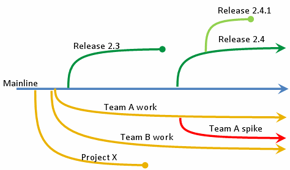
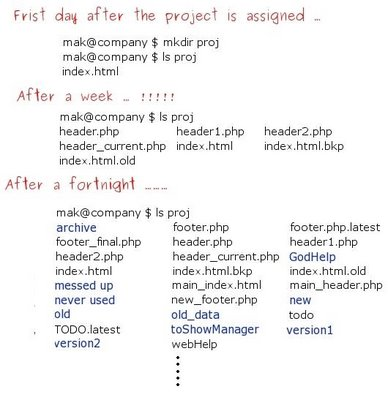
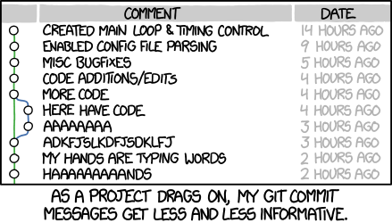
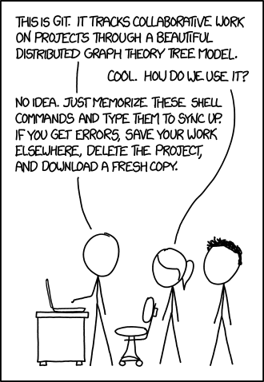
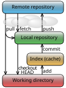

Version control with Git#
Introduction#
Version control (also called revision control or source control) is the management and tracking of changes to code and other project files over time.
Any project (a collection of files in directories) under version control has changes/additions/deletions recorded so you can recover specific versions later.
Version control is also the technology embedded in the versioning of many word processors and spreadsheet applications (e.g., Google Docs, Overleaf).


Fig. 5 An overview of how version control works. Some of the project mainline’s branches may eventually be merged back into the mainline if they are successful in achieving some objective that is worth integrating into the mainline.#
Why version control?#
With version control of biological computing projects, you can:
record all changes made to a set of files and directories, including text (usually ASCII) data files, so that you can access any previous version of the files
“roll back” data, code, documents that are in plain text format (other file formats can also be versioned; see Binary and large files below).
collaborate more easily with others on developing new code or writing documents — branch (and merge) projects
add remote redundancy for your project (but Git is not general backup software; see Binary and large files below).


Fig. 6 This will very likely happen if you don’t use version control.
(Source: maktoons.blogspot.com).#
Why Git?#
We will use Git, developed by Linus Torvalds (the “Lin” in Linux). It is a distributed version control system designed to handle projects of all sizes quickly and efficiently, and it supports collaboration without overwriting each other’s work.
The main advantages of Git are:
Distributed system: every developer has a complete copy of the project, including its history
Efficiency: fast performance for both local and remote operations
Data integrity: every commit snapshot is checksummed
Flexibility: supports non-linear development workflows through branching and merging
Collaboration: enables teamwork by allowing multiple people to work on different parts (typically on separate branches) simultaneously
Git’s four places#
Git becomes much less mysterious once you know that it moves your work between four places:
Working directory — the files and directories you can see and edit.
Staging area — the changes you have selected for your next snapshot.
Local repository — the snapshots you have committed on your computer.
Remote repository — another copy of the repository, usually hosted on GitHub, GitLab or Bitbucket.
Think of Git like preparing specimens for an archive. Your working directory is the lab bench. git add puts selected specimens into a labelled tray (the staging area). git commit seals and records that tray in your local archive. git push sends your recorded work to a shared archive. Git provides no lab technician, however: you still have to label things sensibly.
working directory --git add--> staging area --git commit--> local repository --git push--> remote repository
Git and GitHub are therefore not the same thing. Git records project history, mostly on your own computer. GitHub is one service that can host a remote copy and provide collaboration tools. Git works without GitHub; GitHub without Git would be a rather expensive file-sharing website.
Nor is Git Dropbox. It does not continuously synchronize every edit. You deliberately choose what to stage, commit and share. This initially feels like unnecessary bureaucracy, but it is precisely what gives you a useful, inspectable history instead of a directory full of files called analysis_final_FINAL_v7_reallyfinal.R.
Tip
When Git appears to be behaving irrationally, run git status. Git is usually being painfully literal rather than actively malicious. Usually.
Installing and configuring Git#
First install Git and complete the installation and identity parts of the one-time Git, GitHub and SSH Setup. You do not need a GitHub account or an internet connection for the local exercise below.
Tip
Installing Git on your machine (if you do not already have it):
On Linux, use a package manager (e.g.,
sudo apt-get install giton Ubuntu).On Mac, install Homebrew first (if needed) and then run
brew install git.On Windows, install Git from git-scm.com/downloads. GitHub Desktop also includes Git.
In what follows, commands appear in bash blocks. Sometimes the expected output is shown in a separate block immediately afterwards. Do not type the output back into your terminal; Git has enough opportunities for confusion without us manufacturing additional ones.
Your first repository#
We will first use a disposable practice directory, rather than experimenting on your actual coursework. Once the workflow makes sense, you can apply it to CMEECourseWork without discovering new and exciting ways to rearrange its history.
Create the directory and enter it:
Turn this ordinary directory into a Git repository:
git init -b main
Create a small README. Creating a file inside a repository does not automatically include it in Git’s history:
echo "My Git practice repository" > README.md
Have a look inside the directory. The -a flag includes hidden files and directories:
The hidden .git directory is the local repository: it contains Git’s database and configuration for this project. You will almost never edit its contents directly. Think of it as the engine compartment: useful to know it exists; a poor place to wave a spanner casually.
Now ask Git what it sees:
git status
The README should appear under Untracked files. Git can see it, but it is not yet included in the proposed snapshot.
Select the README for the next snapshot. This is called staging it:
git add README.md
Check the repository again:
git status
git diff --staged
The README should now appear under Changes to be committed. This does not mean it has been committed; it means Git has placed its current contents in the staging area.
Before committing, inspect the proposed snapshot:
git commit -m "Add project README"
The commit records only the staged snapshot, not every file in the directory. Now check the state of all four places again:
git status
Git should report a clean working tree: the working directory matches the latest committed snapshot. View that history with:
git log --oneline
Your first everyday Git loop is therefore:
edit → status → diff → add → diff --staged → commit → log
You will not always need every inspection command, but while learning they show precisely where your changes are. git status remains the best first response to the question “What on Earth have I done?”
Staging named files, as above, is usually the clearest option. You can also stage files matching a pattern:
For example, to stage all .txt files (pattern-based), you can do:
git add -- '*.txt'
Quoting the pattern means Git interprets it (not your shell), which is more predictable across different shells.
Ignore before you add#
Most projects contain temporary files, generated outputs or private configuration that should never enter the repository. Tell Git about these in a .gitignore file before staging the project. In the practice repository, ignore editor backup files and files ending in .tmp:
printf "*~\n*.tmp\n" > .gitignore
touch scratch.tmp
git status
The .gitignore file should appear as untracked, while scratch.tmp should not appear at all. The ignore rules themselves belong in the repository so that collaborators use them too. Stage and commit them:
git add .gitignore
git commit -m "Ignore temporary files"
git status
Apply the loop to your coursework#
Move to your coursework directory and inspect it before initializing anything:
cd ~/Documents/CMEECourseWork
git status
If git status reports a branch and working-tree state, this folder is already inside a repository: do not run git init again. If it reports that this is not a Git repository, continue with the setup below.
Create or review a root .gitignore before the first git add of project files. It can be created before or after git init; what matters is that you check its rules and create it before staging files you mean to ignore. Include the .gitignore itself in your first commit. Initialize Git only if the folder is not already a repository, then stage selected files deliberately:
# Run this only if git status said this is not a Git repository
git init -b main
git status
git add .gitignore
Now add each intended project file by name, then inspect the staged snapshot with git status and git diff --staged. Avoid a reflexive git add -A until you have inspected the files and confirmed that large data, generated outputs, credentials and other clutter are excluded. A .gitignore rule does not untrack a file that Git already tracks.


Fig. 7 Make commit messages useful. “Commit often, comment always” is a sound mantra; the correct meaning of “often” comes with experience.
(Source: XKCD)#
Write useful commit messages#
A message should let your future self—or an unimpressed collaborator—understand why the snapshot exists without reconstructing the entire afternoon.
Use a short imperative subject:
Add validation for missing temperatures
Fix Fahrenheit conversion formula
Document species-richness workflow
Prefer Add, Fix or Document to Added, Fixed or Updated stuff. Keep the subject focused and omit the final period. If the reason is not obvious, add a blank line and a short body:
Add validation for missing temperatures
Reject incomplete rows before model fitting so that failed
analyses identify the problematic input rather than returning NA.
Commits should contain one logical change where practical. “Fix model and reorganise every directory and update ten figures” is not one logical change; it is several decisions travelling under one false moustache.
Tip
On GitHub, Fixes #42 in a commit or pull-request description can link the change to issue 42 and close it when merged into the default branch.
What a commit records#
A commit is a named snapshot of the staged contents of your repository at a particular point in time. It records the snapshot, its author and date, a message, and the previous commit from which it developed.
Each commit has a long identifier called a hash, for example e83c5163316f89bfbde7d9ab23ca2e25604af290. You will normally use only its first few characters, such as e83c516. The cryptographic details are interesting but not required for operating the machinery; treat the hash as Git’s catalogue number for an exact snapshot.
Core Git commands#
Command |
What it does |
|---|---|
|
Initialize a repository with a |
|
Show the current branch and the state of working and staged changes |
|
Show unstaged changes |
|
Put selected changes into the staging area |
|
Show what the next commit would contain |
|
Record the staged snapshot in the local repository |
|
Show commit history |
|
Switch to another branch |
|
Create a branch and switch to it |
|
Download remote history without integrating it |
|
Fetch and integrate remote changes into the current branch |
|
Upload local commits to a remote repository |
Do not try to memorize the entire Git command language at once. For ordinary solo work, the important rhythm remains:
edit → status → diff → add → diff --staged → commit → log
Remote work adds deliberate synchronization around that local loop: fetch or pull before integrating other people’s work, and push after checking what you are about to share.
Your remote repository#
A local repository is the project directory together with its hidden .git directory. A remote repository is a separate copy hosted on GitHub or another server. You can give the folder and hosted repository the same name, such as CMEECourseWork, but matching names do not connect them. origin is simply the local nickname Git uses for a remote URL.
Tip
The project folder name, GitHub repository name, remote nickname (origin), and branch name (main) are four different things. Matching the first two is convenient but optional; the remote URL is what connects the local repository to GitHub.
Choose the setup path that matches where you started:
Local project first: If your project already exists on your computer, inspect it, create or review
.gitignorebefore staging project files, initialize Git only if needed, and make your first commit. Then create a GitHub repository with the name you want. For this route, leave GitHub’s options to add a README, licence, or.gitignoreunchecked so the remote starts empty. The commands below show how to connect this local repository.GitHub repository first: If you created the GitHub repository first, clone it with
git clone <remote-url>. Cloning creates the local directory, its.githistory, and theoriginremote. Do not also rungit initorgit remote add origin. If the project files exist only as ordinary, uncommitted files, copy the files you want into the clone; do not copy the.gitdirectory. If your local project already has Git commits, use the local-first path with an empty remote, or get help reconciling the histories. Copying files alone does not transfer commits.
Tip
Create or review .gitignore before the first git add of project files. It can be created before or after git init; include the .gitignore itself in a commit.
Warning
Do not independently initialize both sides and then try to join them with a first push. A README or .gitignore created on GitHub is already a commit, separate from any local history, so Git may reject the push. For a local project with commits, use an empty remote; if the GitHub repository already has commits, clone it or follow a deliberate history-reconciliation workflow. Do not force-push to bypass this mismatch.
Before connecting, complete Git, GitHub and SSH Setup for identity and authentication. The commands below continue the local project first path; if you cloned instead, origin is already set up.
Copy the SSH URL from the GitHub repository page. Replace the capitalized placeholders below with the account and repository names from that URL:
git remote add origin git@github.com:YOUR-ACCOUNT/YOUR-REPOSITORY.git
List the URLs associated with the remote:
git remote -v
The output should show the same URL for fetching and pushing, for example:
origin git@github.com:YOUR-ACCOUNT/YOUR-REPOSITORY.git (fetch)
origin git@github.com:YOUR-ACCOUNT/YOUR-REPOSITORY.git (push)
origin is merely a conventional nickname for this remote, not a special internet location ordained by Git. The two lines show where Git fetches from and pushes to; they usually use the same URL.
For the local project first path, after making your first local commit and adding the empty remote, push main and set its upstream counterpart:
git push -u origin main
This uploads commits from your local main branch to the remote called origin. The -u option records the upstream relationship, so future pushes and pulls from this branch can usually be shortened to git push and git pull. A cloned repository normally has origin and upstream tracking configured already; after you make and commit changes, use git push without adding the remote again. Older repositories may call their default branch master; use the branch name that git status reports.
Note
Editing, staging, committing, branching and viewing history are local operations and need no internet connection. fetch, pull and push communicate with a remote and therefore do.
Branching#
Suppose you want to rewrite the introduction of your \(\LaTeX\) paper or test whether a new package improves your code. You want the experiment recorded, but you do not yet want it on the stable main branch.
A branch is not another copy of the project. It is a lightweight, movable label pointing to a commit. As you commit new work, the current branch label moves forward. Creating one is therefore quick and cheap; Git does not photocopy your entire directory and sigh heavily.
Create a branch called anexperiment and switch to it in one command:
git switch -c anexperiment
git branch
Git lists both branches and marks the current one with *. You can also ask git status, which reports the current branch at the top.
Note
Older tutorials commonly use git checkout -b anexperiment. It still works, but git switch -c anexperiment says more clearly that we are creating and switching branches.
git status
Now make a change on the experimental branch by updating the README with the new naughty thing you have started doing:
echo "I am trying a new naughty thing on this experimental branch!" >> README.md
git status
git diff
Stage, inspect and commit the change:
git add README.md
git diff --staged
git commit -m "Test experimental README change"
You may encounter git commit -am "message", which stages modifications to already tracked files and immediately commits them. It does not include new untracked files. It is convenient once you understand the staging area, but explicit add and diff --staged commands make fewer assumptions and are better while learning.
Now if you decide to merge the new branch after modifying it:
git switch main
git merge anexperiment
cat README.md
Because main has not changed since the experiment began, Git will probably report a fast-forward merge: it simply moves the main label forward to the experimental commit. No special merge commit is needed.
After confirming the result, delete the now-merged branch label:
git branch -d anexperiment
If the experiment had been dreadful, you could instead have switched back to main without merging, then discarded the experimental branch with:
git branch -D anexperiment
The uppercase -D forces deletion even when the branch contains unmerged commits, so pause and inspect before using it. Git is being obedient, not wise.
When branches disagree#
If both branches changed the same lines, Git cannot decide which version you intended and reports a merge conflict. The affected files contain markers showing both versions. Edit them into the desired final form, test the result, then run:
git add <resolved-file>
git commit
Do not reach immediately for git reset --hard. It discards uncommitted tracked changes and is not an undo button with good bedside manners. The recovery section below introduces safer commands first.
Our successful merge has deliberately placed the naughty sentence on main. Edit it into something suitable, inspect the change, then stage and commit the correction. That is ordinary history: mistakes happened, and subsequent commits fixed them.
Tip
Branches are excellent for experiments and focused pieces of work. Keep them short-lived, commit logical changes, and merge only after testing. Conflicts are not evidence that Git is broken; they are Git declining to invent which human was correct.


Fig. 8 Try not to do this. But most of us mortals will have, at some point!
(Source: XKCD)#
Note
You can perform git branching and merging entirely within a local repository without needing a remote.
A slightly deeper model#
The everyday four-place model is enough for normal work. These details help when reading Git’s messages or diagnosing an unusual state.
Snapshots, not a pile of patches#
Conceptually, each commit represents a snapshot of the tracked project. Git stores this efficiently by reusing unchanged content, so it does not blindly duplicate every file at every commit. Commands such as git diff calculate the differences between snapshots when you ask for them.
Branches and HEAD#
A branch is a movable label pointing to a commit. HEAD tells Git which branch—or occasionally which exact commit—you currently have checked out. When you commit, the current branch label advances to the new commit.
Hashes#
Git identifies commits and other stored objects with hashes. A full commit hash is long, but a unique short prefix such as d94cd91 is normally sufficient in commands. Think of it as a catalogue number, not a spell you are expected to memorize.


Fig. 9 The main Git locations and the commands that move changes between them. Git data flow simplified by Cmglee, via Wikimedia Commons, licensed under CC BY-SA 3.0. Used unmodified.#

The local database, staging information and repository-specific configuration live inside .git. Run Git commands from the repository directory or one of its subdirectories; Git searches upward for that directory.
The README file#
README.md is the front door of a repository: it tells a new visitor what the project is and how to use it. Markdown is conventional because hosting services render it neatly while the source remains ordinary text.
A useful coursework README normally includes:
Project title and purpose — what question the project addresses.
Project structure — what the important directories contain.
Requirements — language and package versions or an environment file.
Usage — exact commands needed to run the analysis or tests.
Data — where inputs came from and how authorised users obtain anything not stored in Git.
Authors — contributors and contact information.
Explain the important route through the project rather than listing every experimental file. Test the instructions from a fresh clone when possible; “works on my machine” is an observation, not installation documentation.
For group coursework, also identify all team members, summarize their roles, and link to CONTRIBUTIONS.md for detailed contribution records. Include known limitations and testing instructions where relevant.
Tip
Keep the README concise, use clear headings, include runnable command examples, and update it when the project changes. A beautifully documented workflow from three weeks ago is still wrong.
Important
For assessed group work, reviewers should be able to identify every team member, run the project, and follow the link to CONTRIBUTIONS.md. Check the Assessment chapter for the current requirements.
Ignoring files in more detail#
A .gitignore file contains patterns for untracked files Git should normally leave alone: temporary files, generated outputs, local environments and similar clutter. It does not hide files from your computer, and it does not retroactively untrack files already committed.
Ignore rules are part of the project and should normally be committed. Never rely on .gitignore to protect a credential that has already entered Git history; revoke the credential and seek help removing it from history. Git has an uncomfortably good memory.
After checking git status, you can stage broader sets of changes when appropriate:
git add -Astages all additions, modifications and deletions in the repository.git add .stages changes at and below the current directory.
Avoid git add *: the shell expands * before Git sees it, usually omitting dotfiles and producing surprising results. Broad staging is convenient, but follow it with git status and git diff --staged; convenience should not become mystery.
You can also create a global gitignore file that lists rules for files to be ignored in every Git repository on your computer.
Tip
Templates for .gitignore: You can find standard .gitignore templates online. For example, search for “.gitignore templates”.
Common .gitignore patterns#
Patterns apply recursively unless anchored to the repository root with a leading /:
Pattern |
Result |
|---|---|
|
A comment; Git ignores this line |
|
Ignore any file or directory named |
|
Ignore any directory named |
|
Ignore |
|
Ignore the root-level directory |
|
Ignore files ending in |
|
Ignore |
|
Re-include |
Subdirectories may contain additional .gitignore files, although a well-organized root file is usually easier to understand. Standard templates for Python, R, LaTeX and common editors are available from GitHub’s gitignore repository. Read a template before adopting it: copying rules blindly is merely outsourcing the surprise.
Ignoring something after it was committed#
Adding a tracked file to .gitignore does not make Git forget it. To keep the local file but remove it from the next committed snapshot, use:
git rm --cached <file>
git rm -r --cached <directory>
Then commit the removal. Collaborators who pull that commit may have the tracked copy removed from their working tree, so coordinate before doing this on shared files. Also remember that earlier commits still contain the data.
Warning
Whitelist-style .gitignore files can hide course feedback. A catch-all rule such as * ignores file types unless they are explicitly re-included. For example:
*
!*/
!*.py
!*.R
!*.txt
Without !*.txt, a feedback file such as feedback.txt remains ignored. The !*/ rule re-includes directories so Git can reach files below them. Check a missing file with git check-ignore -v feedback.txt.
Binary and large files#
Git can track binary files such as images, archives and Word documents, but it usually cannot show meaningful line-by-line differences between versions. Changing a binary file often causes Git to store substantial new content, so repeated versions can make the repository grow quickly.
Large files—binary or text—cause the same problem. GitHub also rejects individual files larger than 100 MB in ordinary repositories. Keep large raw datasets, generated results and replaceable downloads outside normal Git history. Record where they came from and provide a small representative dataset for testing when possible.
Warning
.gitignore has no rule meaning “ignore every file larger than 100 MB”. A command that writes the currently large filenames into .gitignore is only a one-time inventory; it will not protect you from tomorrow’s new large file.
Write analyses that can be tested on a small minimum working example and document how authorised users obtain the full dataset. Back up irreplaceable data separately: a remote Git repository is useful redundancy for source files, but it is not a general data-backup strategy.
For genuinely versioned large assets, investigate Git LFS or an appropriate research-data repository rather than placing them directly in ordinary Git history.
You can inspect repository storage with:
du -sh .git
git count-objects -vH
Optional protection with pre-commit#
The pre-commit framework can run checks before each commit. Its check-added-large-files hook rejects newly staged files above a chosen size. This is a useful guardrail, though it does not replace looking at git status and git diff --staged.
A minimal configuration in .pre-commit-config.yaml looks like:
repos:
- repo: https://github.com/pre-commit/pre-commit-hooks
rev: v5.0.0
hooks:
- id: check-added-large-files
args: ['--maxkb=500']
After installing pre-commit, activate the repository’s hooks from its root with pre-commit install. Pinning rev makes the check reproducible; update it deliberately rather than pointing teaching material at a moving main branch.
Removing and untracking files#
git rm deletes a tracked file from the working directory and stages that deletion for the next commit:
echo "Text in a file to remove" > FileToRemove.txt
git add FileToRemove.txt
git commit -m "Add temporary example file"
git rm FileToRemove.txt
git commit -m "Remove temporary example file"
To stop tracking a file while keeping the local copy, remove it only from Git’s index:
git rm --cached <file>
Add an appropriate ignore rule before committing, otherwise the now-untracked file will immediately reappear in git status like an administrative task you thought you had finished. Remember that the committed removal may still delete the tracked copy from collaborators’ working trees when they pull.
History and recovery#
First inspect the current state and recent history:
git status
git log --oneline --decorate --graph
Then choose the recovery command that matches where the unwanted change currently lives.
Discard an unstaged change#
To restore a tracked file in the working directory from the staging area or latest commit:
git restore <file>
This discards the file’s uncommitted edits, so inspect git diff first.
Unstage without discarding the edit#
git restore --staged <file>
The change remains in your working directory but is removed from the proposed commit.
Undo a committed change safely#
If a bad commit has already been shared, create a new commit that reverses it:
git revert <commit-hash>
This preserves the existing history and is therefore the normal choice for a shared branch.
Inspect an old snapshot#
git switch --detach <commit-hash>
This temporarily checks out that snapshot without moving a branch. Look around, run analyses and resist making important new work in this detached state. Return with git switch main, or create a branch there with git switch -c <new-branch> if you decide to develop from it.
Last resort: discard all uncommitted tracked changes#
git reset --hard HEAD
This is destructive. It does not mean “undo whatever I was thinking”; it means “make tracked files exactly match HEAD and discard their uncommitted changes.” git clean -fd separately removes untracked files and directories and is even less forgiving. Preview it first with git clean -nd, and do not use either command unless git status confirms that nothing valuable will be lost.
Advanced conveniences#
These commands are useful once the ordinary workflow is familiar, but they are not part of the essential beginner vocabulary.
Run Git against another directory#
The -C option runs Git as though you had first changed into another directory:
git -C ../SomeDir status
Tip
You can clone the MulQuaBio repository and pull it periodically to keep the notes, code and data available locally. Do not clone it inside your coursework repository: nested repositories create a different lesson, and not a pleasant scheduled one.
Inspect several repositories#
If a directory contains several repositories, you can inspect each one without entering it:
find . -mindepth 1 -maxdepth 1 -type d -exec git -C {} status --short \;
Here, find selects immediate subdirectories and -exec runs git -C <directory> status --short on each. Inspecting several repositories is reasonable; blindly pulling all of them is riskier because each may have uncommitted work or a different collaboration workflow. Automation magnifies judgement as efficiently as it magnifies mistakes.
Using Git through a GUI#
There are many nice Git GUI’s (Graphical User Interfaces) out there, such as gitKraken. Or if you are using a code editor like Visual Studio Code, there are nice extensions that will give you considerable GUI functionality.
Tip
Checking git status: Always run the git statuscommand on a repository before pulling/fetching from, or pushing to a remote repository!
Collaborative Git workflows for group work#
Collaboration adds one complication to the local loop: other people can advance the remote history while you are working. Branches and pull requests make those parallel changes visible and reviewable instead of turning main into a communal experiment.
Set up once#
One team member creates the remote repository.
Add every team member with write access.
Each member clones that repository; do not run
git initinside the clone.Agree on task ownership, branch names and review expectations before everyone disappears into separate files.
git clone git@github.com:username/group-project.git
cd group-project
git status
A clone already contains the remote connection and history. Check them with git remote -v and git log --oneline.
The everyday team loop#
Start from an up-to-date main, then create a short-lived branch for one task:
git switch main
git pull --ff-only
git switch -c feature/data-cleaning
The --ff-only option refuses to invent a merge commit during pull. If it fails because histories have diverged, stop, run git status, and understand the divergence with a teammate before choosing how to integrate it. A command refusing to proceed is often Git being helpful in its least charming voice.
Work locally using the familiar loop:
# edit and test
git status
git diff
git add analysis.py
git diff --staged
git commit -m "Add validation for missing temperatures"
Then publish the branch and establish its upstream:
git push -u origin feature/data-cleaning
Open a pull request (GitHub) or merge request (GitLab), describe what changed and why, and ask a teammate to review it. Further commits pushed to the same branch automatically appear in the existing request.
Bring recent main changes into your branch#
If teammates merge work while your branch remains open, fetch and merge the current remote main into your branch:
git fetch origin
git switch feature/data-cleaning
git merge origin/main
Do this before requesting final review. It exposes conflicts on your branch rather than surprising whoever merges it.
Resolve conflicts#
A conflict means Git found competing edits and will not guess which one is scientifically, syntactically or socially correct. git status lists the affected files. Inside one you may see:
<<<<<<< HEAD
result <- mean(data$temperature)
=======
result <- median(data$temperature)
>>>>>>> origin/main
Discuss the intended result, edit away the markers, test the resolved code, then stage and commit it:
git add analysis.R
git commit -m "Resolve temperature summary conflict"
Reduce conflicts by dividing work clearly, keeping branches short-lived, pulling before starting, and communicating before two people rewrite the same function. Conflicts are manageable; surprise is the expensive part.
Review, merge and tidy up#
After approval, merge the pull request using the hosting service. Then update your local repository and delete the obsolete local branch:
git switch main
git pull --ff-only
git branch -d feature/data-cleaning
The remote branch can also be deleted after merging. Branches are working labels, not heirlooms.
Document contributions#
For assessed group work, create a CONTRIBUTIONS.md file recording:
who worked on each component,
individual code and documentation contributions,
review and testing work, and
important collaborative decisions.
Git already records commit authors, so meaningful commits under your own configured identity provide much stronger evidence than an end-of-project torrent called final changes. Useful inspection commands include:
git log --author="Jane Smith"
git shortlog -sn
git blame filename.py
See the Group work execution section in the Assessment chapter for the current requirements and template.
Important
Your Git history and CONTRIBUTIONS.md may be used in individual assessment. Commit your own tested work under your own identity, push regularly, participate in review, and document contributions accurately. Never share one person’s Git credentials among the team.
Team habits worth agreeing on#
Never commit directly to
mainwhen the team has agreed to use review.Use one focused branch and pull request per task.
Run tests before requesting review.
Keep generated outputs, credentials and large data out of ordinary history.
Use issues or another shared task list so ownership is visible.
Run
git statusbefore committing, pulling and pushing.Raise contribution or coordination problems early; Git can record a disagreement, but it cannot chair the meeting.
A friendly concluding note on Git#
Git can feel hard and unintuitive because it asks you to distinguish states that ordinary file editing hides: changed, staged, committed and shared. At some point you will stage the wrong file, work on the wrong branch or receive a message apparently written by a committee of lawyers.
THIS IS NORMAL.
Most committed work is recoverable. When something unexpected happens, stop issuing speculative commands and run git status. Read what Git says, inspect git diff and git log, and ask for help before using a destructive command. Frantic command roulette is rarely an effective recovery strategy.
Useful questions include:
Did I inspect
git statusbefore staging and sharing?Did I use
git diffandgit diff --stagedto check the actual changes?Did I commit after completing a small logical unit of tested work?
Did
.gitignoreexclude generated outputs, credentials and unsuitable data?Am I on the branch I think I am?
With practice, Git becomes as natural as juggling chainsaws: it may always feel slightly odd, but you become much clearer about where your hands should be.
The best next step is routine use. Practise the local loop, create and merge disposable branches, and use Learn Git Branching to visualize how branch labels move. Learn advanced tools such as rebase or cherry-pick only when a real workflow requires them; collecting Git commands is not the same as understanding Git.
Practical#
Do not modify files inside your local clone of the MulQuaBio book repository for this exercise. Copy any required material into your own coursework repository and work there.
Commit and push after each significant, tested piece of work and again before the announced deadline. This includes unixPrac1.txt from the Unix chapter.
Your Git practical submission is the pushed coursework repository. Before submission:
run
git statusand confirm the working tree is in the state you intend,inspect the remote repository to confirm the latest commits arrived,
include a useful
README.md,include a
.gitignorewith meaningful exclusions, andensure no credentials, inappropriate data or generated clutter were committed.
Invite your assessor to the coursework repository with write access. The current assessor is s.pawar@imperial.ac.uk, or mhasoba on GitHub and Bitbucket.
Readings & Resources#
General#
Excellent book on Git: https://git-scm.com/book/en/v2
Look up the Bitbucket Git resources: https://www.atlassian.com/git
Interactive tutorial: https://learngitbranching.js.org/
Markdown#
A cheatsheet for GitHub-flavored Markdown: adam-p/markdown-here
Committing practices#
Some tips for good commit practices: https://chris.beams.io/posts/git-commit/
.gitignore#
Guidelines for the
.gitignorefile: https://labs.consol.de/development/git/2017/02/22/gitignore.htmlGitHub docs: https://docs.github.com/en/get-started/getting-started-with-git/ignoring-files
Branching#
Guidelines for branching: https://gist.github.com/digitaljhelms/4287848
GitKraken’s tips for collaborating effectively on GitHub: https://www.gitkraken.com/blog/collaborate-on-github
Footnotes
1: There you will find the following phrase: “…one of the most annoying problems known to humanity: version-controlling Microsoft Word documents.”. LOL!
2: None of the computing weeks assessments will require you to use such large files anyway